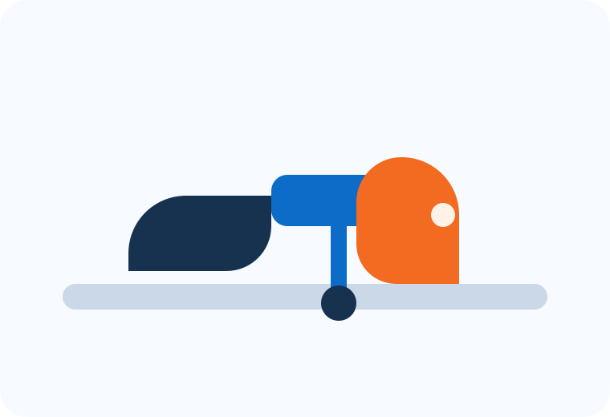
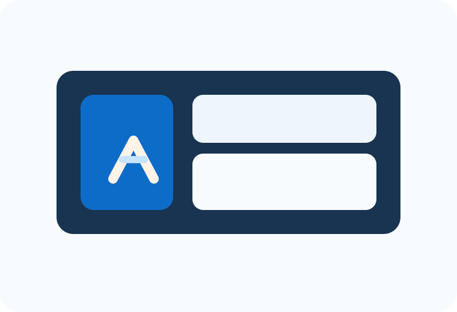
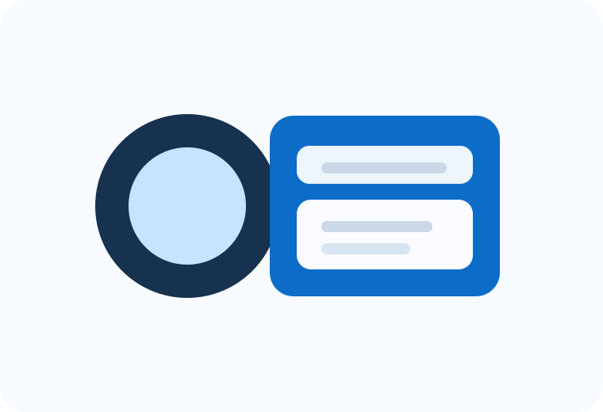
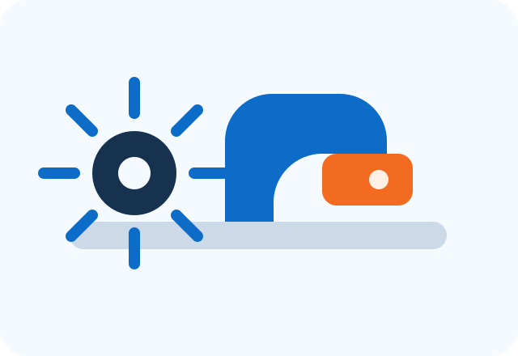

Примеры реализованных решений для сварочного производства
На этой странице собраны проекты по автоматизации, роботизации, разработке оснастки и внедрению специализированного оборудования для предприятий с различной номенклатурой изделий.
На этой странице собраны проекты по автоматизации, роботизации, разработке оснастки и внедрению специализированного оборудования для предприятий с различной номенклатурой изделий.

Решение для серийной сварки изделий с высокой повторяемостью, стабильными параметрами шва и снижением доли ручных операций.
Компоновка для повторяющихся изделий, где важны скорость внедрения, доступность обслуживания и рост производительности на участке.

Комплексное решение для механизации сварочного процесса с привязкой к габаритам изделия, логике загрузки и требованиям к производительности.

Специализированные стенды, обеспечивающие точную фиксацию элементов, удобство контроля и безопасность операций на ответственном изделии.
Решение для стабильной автоматической сварки кольцевых соединений с повторяемым качеством и контролируемой скоростью процесса.
Комплекс под специализированную операцию, ориентированный на стабильность режима, точное позиционирование и удобство работы оператора.
Чем подробнее исходные данные, тем точнее можно подобрать формат решения. Для первичной проработки достаточно чертежа, фотографии изделия или краткого описания текущего процесса.
